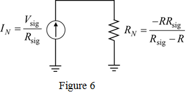

Step 1:
(a)
Millers theorem states that when an impedance Z is connected between the input and the output node, it can be replaced by two impedances, connected between node 1 and ground and  connected between node 2 and ground.
connected between node 2 and ground.
Where,
Here,
K is the gain of an amplifier.
Step 2:
Refer to Figure P9.59 in the textbook.
From the circuit of Figure P9.59, the impedance Z is equal to R.
Use Millers theorem to replace R with  and
and  as shown in Figure 1.
as shown in Figure 1.
Step 3:
Calculate the Miller equivalent impedance,  .
.
Substitute R for Z, 2 for K to obtain  .
.
Therefore, the value of  is –R.
is –R.
Calculate the Miller equivalent impedance, .
Substitute R for Z, 2 for K to obtain  .
.

Therefore, the value of  is 2R.
is 2R.
Step 4:
From Figure 1, the input resistance is given by,
Substitute -R for  to obtain
to obtain  .
.
Therefore, the input resistance is .
Step 5:
(b)
Consider the equivalent circuit with as shown in Figure 2.
Step 6:
The equivalent circuit to find the Norton’s current, is shown in Figure 3.
Step 7:
In Figure 3, the resistor  can be omitted as there is a short circuit across the resistor . The equivalent circuit after the omission of resistor
can be omitted as there is a short circuit across the resistor . The equivalent circuit after the omission of resistor  is shown in Figure 4.
is shown in Figure 4.
Step 8:
Calculate the Norton’s current from Figure 4.
The equivalent circuit to find the Norton’s resistance is shown in Figure 5.
Figure 5
Step 9:
From Figure 5, the equivalent Norton’s resistance is,
Substitute –R for  to obtain .
to obtain .
Therefore, using the Norton’s theorem the circuit in Figure 2 is replaced with a signal source and an equivalent parallel resistance as shown in Figure 6.

Step 10:
The equivalent parallel resistance is the Norton’s resistance.
Substitute R for to obtain the equivalent parallel resistance.
Therefore, by selecting  , then the equivalent parallel resistance is
, then the equivalent parallel resistance is  .
.
If , then the Norton’s current is,
Therefore, by selecting  , then the Norton’s current is .
, then the Norton’s current is .
Replace the equivalent circuit of  in Figure 1 with the Norton’s equivalent circuit . Now, the equivalent circuit is as shown in Figure 7.
in Figure 1 with the Norton’s equivalent circuit . Now, the equivalent circuit is as shown in Figure 7.

Step 11:
From the input part of the circuit 7, the load current is,
Therefore, the current  flowing into the load impedance is
flowing into the load impedance is  .
.
Now, the circuit functions as an ideal voltage –controlled current source with an output current .
Step 12:
(c)
If  is a capacitor
is a capacitor , then the equivalent circuit is shown in Figure 8.
, then the equivalent circuit is shown in Figure 8.
Step 13:
Represent node in Figure 8. Then the equivalent circuit is shown in Figure 9.
Figure 9
Step 14:
Since the gain of the amplifier is +2, the relation between voltages and  is,
is,
Apply nodal analysis at node  .
.
…… (1)
Substitute for  in the equation.
in the equation.
…… (2)

Substitute R for  in the equation (2).
in the equation (2).
Therefore , the transfer function is 
Step 15:
Consider the transfer function of the circuit.
Convert the equation into time domain.
…… (3)
From the equation (3), it is proved that the circuit is an ideal non-inverting integrator.